Eje 1
Organización, estructura y actividad celular
Sin respuestas todavía
PAES Admisión 2027 · Competencia Científica
Los cuatro ejes temáticos: célula · procesos y funciones biológicas · herencia y evolución · organismo y ambiente
Prof. Bastiani Calabrano · Complemento Matemático
Eje 1
Sin respuestas todavía
Eje 2
Sin respuestas todavía
Eje 3
Sin respuestas todavía
Eje 4
Sin respuestas todavía
| Habilidad | Qué se te pide | Señal en el enunciado |
| Observar y plantear preguntas | Reconocer preguntas investigables e hipótesis que explican una observación. | “¿Cuál es una hipótesis…?”, “¿qué pregunta se puede investigar?” |
| Planificar y conducir una investigación | Identificar variables (independiente, dependiente, controladas), grupo control, procedimientos y evidencias que sustentan teorías. | “¿Cuál es la variable…?”, “¿qué debe recibir el grupo control?” |
| Procesar y analizar la evidencia | Leer tablas y gráficos, encontrar tendencias, calcular, predecir e inferir. | Tablas, gráficos, “según los datos…” |
| Evaluar | Juzgar validez, confiabilidad y alcance de conclusiones; distinguir correlación de causalidad; valorar aportes de la ciencia y la tecnología. | “¿Cuál es la principal limitación…?” |
| Comunicar | Elegir el recurso adecuado (tabla, gráfico de líneas o barras, esquema, modelo). | “¿Qué representación es la más adecuada…?” |
Eje 1 · Organización, estructura y actividad celular › Teoría
Eje 1
En esta área temática se evaluará la capacidad de analizar investigaciones, teorías o leyes científicas asociadas a la organización, estructura y actividad celular: estructura y función de organelos y estructuras celulares en procariontes y eucariontes (animales y vegetales), y la relación entre estructura y función en el enterocito, la célula muscular esquelética, la neurona y las células secretoras pancreáticas.
| Concepto | ¿Qué es? | Ejemplo o clave |
|---|---|---|
| Célula | Unidad estructural, funcional y de origen de todos los seres vivos (teoría celular). | Una bacteria, una neurona, una célula del pétalo. |
| Procarionte | Célula sin núcleo (su ADN está libre en el citoplasma, en el nucleoide) y sin organelos membranosos. | Bacterias y arqueas. |
| Eucarionte | Célula con núcleo delimitado por una envoltura y con organelos membranosos. | Animales, plantas, hongos, protistas. |
| Organelo | Estructura celular especializada en una función (“órgano” de la célula). | Mitocondria: respiración celular. |
| Membrana plasmática | Bicapa de fosfolípidos con proteínas que delimita la célula y regula el paso de sustancias (permeabilidad selectiva). | Modelo de mosaico fluido. |
| Estructura–función | La forma y los organelos abundantes de una célula reflejan lo que hace. | Célula que secreta proteínas ⇒ mucho RER y Golgi. |
| Científico | Aporte (evidencia) |
|---|---|
| Hooke (1665) | Observa con un microscopio simple “celdillas” en el corcho (paredes de células muertas) y las llama células. |
| Leeuwenhoek (1674) | Con lentes mejores observa por primera vez microorganismos vivos (“animálculos”). |
| Schleiden (1838) y Schwann (1839) | Concluyen que todas las plantas y todos los animales están formados por células. |
| Virchow (1855) | “Omnis cellula e cellula”: toda célula proviene de otra célula preexistente. |
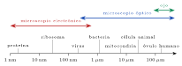
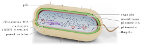
| Estructura | Función |
|---|---|
| Cápsula | Capa externa de polisacáridos (no todas la tienen). Protege de la desecación y de la fagocitosis por glóbulos blancos; favorece la adherencia: aumenta la capacidad de causar enfermedad. |
| Pared celular | Rígida, de peptidoglicano (mureína). Da forma y evita que la célula estalle por entrada de agua. Blanco de la penicilina. |
| Membrana plasmática | Regula el intercambio de sustancias; en ella ocurre la respiración celular (no hay mitocondrias). |
| Nucleoide | ADN circular único, sin envoltura. |
| Plásmidos | Pequeños ADN circulares extra (p. ej., genes de resistencia a antibióticos). |
| Ribosomas (70S) | Síntesis de proteínas; más pequeños que los eucariontes (80S). |
| Flagelo / pili | Flagelo: movimiento. Pili: adherencia y transferencia de ADN. |
| Característica | Procarionte | Eucarionte |
|---|---|---|
| Núcleo | No; ADN en el nucleoide | Sí; envoltura nuclear doble con poros |
| ADN | Circular, uno; además plásmidos | Lineal, varios cromosomas asociados a proteínas (histonas) |
| Organelos membranosos | No (ni mitocondrias, ni RE, ni Golgi, ni lisosomas) | Sí: RE, Golgi, lisosomas, mitocondrias, (cloroplastos en vegetales) |
| Ribosomas | 70S (más pequeños) | 80S en el citoplasma (70S dentro de mitocondrias y cloroplastos) |
| Tamaño | 1–5 μm | 10–100 μm |
| Pared celular | Casi siempre, de peptidoglicano | En vegetales (celulosa) y hongos (quitina); no en animales |
| Citoesqueleto | Muy simple | Desarrollado (microtúbulos, microfilamentos, filamentos intermedios) |
| División | Fisión binaria | Mitosis y meiosis |
| Ejemplos | Bacterias (E. coli, Streptococcus) y arqueas | Animales, plantas, hongos, protozoos y algas |
| Lado | Superficie | Volumen | S/V |
| 1 μm | 6 μm2 | 1 μm3 | 6 |
| 2 μm | 24 μm2 | 8 μm3 | 3 |
| 4 μm | 96 μm2 | 64 μm3 | 1,5 |
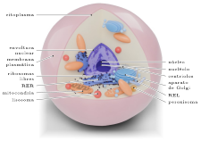
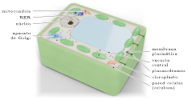
| Estructura | Animal | Vegetal | Hongo |
|---|---|---|---|
| Pared celular | No | Sí, de celulosa | Sí, de quitina |
| Cloroplastos | No | Sí | No |
| Mitocondrias | Sí | Sí | Sí |
| Vacuola | Pequeñas, varias | Una central grande | Variables |
| Centriolos | Sí | No (en la mayoría) | No (en la mayoría) |
| Lisosomas | Abundantes | Escasos (la vacuola cumple su función) | Escasos |
| Reserva de glúcidos | Glucógeno | Almidón | Glucógeno |
| Forma | Variable | Fija (poliédrica) | Fija |
| Comunicación | Uniones celulares | Plasmodesmos | Poros en los tabiques |
| Muestra | Núcleo | Pared | Cloroplastos | Mitocondrias | Centriolos |
| P | − | + | − | − | − |
| Q | + | + | + | + | − |
| R | + | − | − | + | + |
| S | + | + | − | + | − |
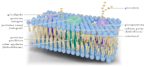
| Tipo | Función y ejemplo |
|---|---|
| Canales | Poros por donde pasan iones o agua (acuaporinas). |
| Transportadores | Se unen a una molécula y cambian de forma para pasarla (transportador de glucosa). |
| Bombas | Transporte activo con gasto de ATP (bomba Na+/K+). |
| Receptores | Reciben señales químicas (hormonas, neurotransmisores) y desencadenan una respuesta. |
| Enzimas | Catalizan reacciones en la superficie (enzimas digestivas del enterocito). |
| Uniones celulares | Unen células entre sí (uniones estrechas, desmosomas). |
| Marcadores | Glucoproteínas de reconocimiento (“carnet de identidad” celular). |
| Mecanismo | ¿Cómo ocurre? | ¿ATP? | ¿Proteína? | Ejemplo |
| Difusión simple | A favor del gradiente de concentración (de mayor a menor), a través de la bicapa | No | No | O2 y CO2 en los alvéolos y en los tejidos |
| Difusión facilitada | A favor del gradiente, a través de canales o transportadores | No | Sí | Entrada de glucosa a los glóbulos rojos; iones por canales |
| Osmosis | Difusión del agua a través de una membrana semipermeable, hacia donde hay más soluto (menos agua libre) | No | A veces (acuaporinas) | Absorción de agua en el intestino y en la raíz |
| Transporte activo | En contra del gradiente (de menor a mayor concentración) | Sí | Sí (bombas) | Bomba Na+/K+: saca 3 Na+ y entra 2 K+ por ATP |
| Endocitosis | La membrana envuelve material y forma una vesícula hacia adentro: fagocitosis (partículas sólidas), pinocitosis (líquidos), mediada por receptores | Sí | Receptores (en la mediada) | Glóbulos blancos que fagocitan bacterias; ingreso de colesterol (LDL) |
| Exocitosis | Una vesícula se fusiona con la membrana y libera su contenido al exterior | Sí | Sí | Secreción de enzimas digestivas, hormonas y neurotransmisores |
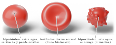
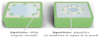
| Sacarosa (M) | Δ masa (%) |
| 0,0 | +20 |
| 0,2 | +9 |
| 0,4 | 0 |
| 0,6 | −8 |
| 0,8 | −15 |
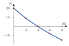
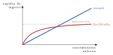
| Condición | [K+] interna | [K+] externa |
| Célula normal | 140 mM | 5 mM |
| Con cianuro (sin ATP) | disminuye | aumenta |
| Organismo | Componente principal | Observación |
|---|---|---|
| Bacterias | Peptidoglicano (azúcares + péptidos) | La penicilina impide su síntesis: la bacteria estalla. |
| Plantas | Celulosa (polímero de glucosa) | Pared primaria flexible; algunas forman pared secundaria con lignina (madera). |
| Hongos | Quitina | Mismo polímero del exoesqueleto de los insectos. |
| Animales | No tienen | Tienen matriz extracelular (colágeno), que no es pared. |
| Se inyecta al ratón | Resultado |
|---|---|
| Neumococo con cápsula (S), vivo | Muere |
| Neumococo sin cápsula (R), vivo | Vive |
| S muerto por calor | Vive |
| Tipo | Proteína y estructura | Diámetro | Funciones | Ejemplos |
| Microfilamentos | Actina: dos hebras enrolladas | ≈7 nm (los más delgados) | Forma de la superficie celular, contracción (con miosina), división del citoplasma (anillo contráctil), movimiento ameboideo | Eje de las microvellosidades; sarcómero muscular; pseudópodos de los glóbulos blancos |
| Filamentos intermedios | Varias proteínas fibrosas (queratina, neurofilamentos, láminas) | ≈10 nm | Resistencia mecánica a la tracción; los más estables | Queratina de la piel y el pelo; lámina nuclear; neurofilamentos del axón |
| Microtúbulos | Tubulina: tubos huecos de 13 protofilamentos | ≈25 nm (los más gruesos) | “Rieles” para el transporte de vesículas y organelos (proteínas motoras cinesina y dineína); huso mitótico; forma cilios, flagelos y centriolos | Transporte a lo largo del axón; separación de cromosomas |
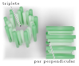
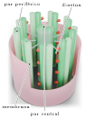
| Cilios | Flagelos | |
|---|---|---|
| Número | Muchos | Uno o pocos |
| Largo | Cortos (5–10 μm) | Largos (hasta 200 μm) |
| Ejemplo | Tráquea: barren el mucus; trompa de Falopio: mueven el óvulo | Espermatozoide: lo desplaza nadando |
| Proceso | Colchicina1 | Citocalasina2 |
| Separación de cromosomas | × | ✓ |
| Estrangulamiento del citoplasma | ✓ | × |
| Transporte de vesículas en el axón | × | ✓ |
| Emisión de pseudópodos | ✓ | × |
| Batido de los cilios | × | ✓ |
| Unión | Estructura y función |
|---|---|
| Estrecha (oclusiva) | “Cose” las membranas vecinas como un cierre: sella el espacio entre células e impide que las sustancias pasen entre ellas. Obliga a que pasen a través de las células (control). Típica del enterocito. |
| Desmosoma (adherente) | “Remache” unido a filamentos intermedios: resistencia mecánica. Abunda en la piel y el corazón. |
| Comunicante (gap) | Canales que conectan los citoplasmas: pasan iones y moléculas pequeñas. Permite que el corazón se contraiga coordinado. Equivalente animal del plasmodesmo. |
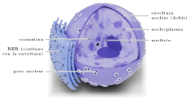
| Ribosomas libres | Ribosomas unidos al RE | |
|---|---|---|
| Ubicación | Citosol | Cara externa del RER |
| Destino de la proteína | Se queda dentro de la célula: citosol, núcleo, mitocondrias, peroxisomas | Secreción (exportación), membrana plasmática, lisosomas |
| Ejemplo | Hemoglobina, enzimas de la glucólisis, actina | Insulina, enzimas digestivas, anticuerpos |
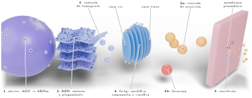
| Organelo | Estructura | Funciones |
| Retículo endoplasmático rugoso (RER) | Sacos aplanados (cisternas) interconectados, con ribosomas en su cara externa; continuo con la envoltura nuclear | Síntesis de proteínas de exportación, de membrana y lisosomales; las pliega y les agrega azúcares (inicio de la glicosilación); control de calidad |
| Retículo endoplasmático liso (REL) | Red de túbulos sin ribosomas | Síntesis de lípidos (fosfolípidos de membrana y hormonas esteroidales); detoxificación de fármacos y alcohol (hígado); almacena Ca2 + (en el músculo: retículo sarcoplásmico) |
| Aparato (complejo) de Golgi | Pilas de 4–8 cisternas aplanadas (dictiosomas) con dos caras: cis (recibe, mira al RE) y trans (envía) | Modifica proteínas (completa la glicosilación), las empaqueta en vesículas y las clasifica según su destino; forma los lisosomas; en plantas sintetiza polisacáridos de la pared |
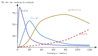
| Control | Fenobarbital | |
|---|---|---|
| Superficie de REL (u.a.) | 100 | 250 |
| Enzimas detoxificantes (u.a.) | 100 | 280 |
| Tiempo de sueño con la dosis (min) | 60 | 20 |
| Afirmación incorrecta | Corrección |
|---|---|
| “El Golgi sintetiza proteínas” | Las modifica y empaqueta; las sintetizan los ribosomas (del RER) |
| “El nucléolo es un organelo con membrana” | Es una región del núcleo sin membrana |
| “Los ribosomas son exclusivos de eucariontes” | Todas las células los tienen |
| “El REL fabrica proteínas” | Fabrica lípidos (no tiene ribosomas) |
| “Los lisosomas vienen del RER directamente” | Se forman en el Golgi (sus enzimas sí se sintetizan en el RER) |
| “La insulina se fabrica en ribosomas libres” | Es de exportación: ribosomas del RER |
| Mitocondria | Cloroplasto | |
|---|---|---|
| Membranas | 2 + crestas | 2 + tilacoides |
| Proceso | Respiración | Fotosíntesis |
| Consume | Glucosa + O2 | CO2 + H2O + luz |
| Produce | CO2 + H2O + ATP | Glucosa + O2 |
| Energía | Química → ATP | Luminosa → química |
| Presente en | Casi todas las eucariontes | Solo vegetales y algas |
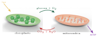
| Evidencia | ¿Por qué apoya la teoría? |
| ADN propio, circular y sin histonas | Igual al de las bacterias; distinto del ADN nuclear |
| Ribosomas 70S | Del tamaño de los bacterianos; ciertos antibióticos que bloquean ribosomas bacterianos también afectan a los mitocondriales |
| Doble membrana | La interna sería la membrana de la bacteria; la externa, la vesícula de la célula que la englobó |
| Se dividen por fisión binaria | No se fabrican “de cero”: se originan de otras mitocondrias o cloroplastos |
| Tamaño (1–10 μm) | Similar al de una bacteria |
| Estructura | Estructura (¿cómo es?) | Función principal | Proc. | Anim. | Veg. |
| Cápsula | Polisacáridos, por fuera de la pared | Protección (fagocitosis, desecación), adherencia | ✓* | – | – |
| Pared celular | Rígida: peptidoglicano / celulosa / quitina | Forma, soporte, resiste la turgencia | ✓ | – | ✓ |
| Membrana plasmática | Bicapa de fosfolípidos con proteínas (mosaico fluido) | Permeabilidad selectiva, transporte, reconocimiento | ✓ | ✓ | ✓ |
| Citoesqueleto | Microfilamentos, filamentos intermedios, microtúbulos | Forma, movimiento, transporte interno, división | simple | ✓ | ✓ |
| Núcleo | Doble envoltura con poros; cromatina | Guarda el ADN; controla la síntesis de proteínas | – | ✓ | ✓ |
| Nucléolo | Región densa sin membrana | Fabrica ARNr y ensambla subunidades ribosomales | – | ✓ | ✓ |
| Ribosomas | ARNr + proteínas, sin membrana (70S / 80S) | Síntesis de proteínas (traducción) | ✓ | ✓ | ✓ |
| RER | Cisternas con ribosomas | Proteínas de exportación, de membrana y lisosomales | – | ✓ | ✓ |
| REL | Túbulos sin ribosomas | Lípidos y esteroides, detoxificación, reserva de Ca2 + | – | ✓ | ✓ |
| Aparato de Golgi | Cisternas apiladas (cis–trans) | Modifica, empaqueta y distribuye; forma lisosomas | – | ✓ | ✓ |
| Lisosomas | Vesículas con hidrolasas ácidas | Digestión intracelular (hetero- y autofagia) | – | ✓ | escasos |
| Peroxisomas | Vesículas con oxidasas y catalasa | Oxidación de ácidos grasos; degrada H2O2; detoxificación | – | ✓ | ✓ |
| Mitocondrias | Doble membrana, crestas, ADN y ribosomas 70S | Respiración celular: produce ATP | – | ✓ | ✓ |
| Cloroplastos | Doble membrana, tilacoides (grana), ADN | Fotosíntesis | – | – | ✓ |
| Vacuolas | Saco de una membrana (tonoplasto) | Turgencia, almacenamiento, digestión | – | pequeñas | central |
| Centriolos | 9 tripletes de microtúbulos, en pares | Organizan el huso; originan cuerpos basales | – | ✓ | – |
| Cilios y flagelos | Axonema 9 × 2 + 2 con dineína | Movimiento celular o del medio | flagelo** | ✓ | –*** |
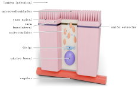
| Estructura | ¿Para qué le sirve? |
|---|---|
| Microvellosidades (“ribete en cepillo”, eje de actina) | Multiplican la superficie de absorción unas 20 veces; en su membrana hay enzimas digestivas y transportadores |
| Muchas mitocondrias (apicales) | ATP para el transporte activo (bomba Na+/K+ que impulsa la entrada de glucosa) |
| Uniones estrechas | Sellan el espacio entre células: los nutrientes deben pasar a través de la célula (absorción controlada, sin fugas) |
| Proteínas de transporte | Distintas en cada cara: unas hacen entrar el nutriente por el lado apical; otras lo dejan salir por el basolateral |
| REL y Golgi | Rearman las grasas absorbidas y las empaquetan (quilomicrones) |
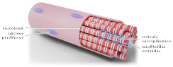
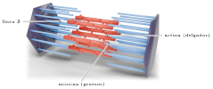
| Estructura | ¿Para qué le sirve? |
|---|---|
| Miofibrillas de actina y miosina en sarcómeros | Al recibir la señal, la miosina “tira” de la actina: los filamentos se deslizan y el sarcómero se acorta. Su orden produce las estrías |
| Muchas mitocondrias | El deslizamiento consume mucho ATP (más en músculos de resistencia); reserva de glucógeno |
| Retículo sarcoplásmico (REL especializado) | Almacena Ca2 + y lo libera cuando llega el impulso nervioso: el Ca2 + dispara la contracción |
| Multinucleada | Se forma por fusión de muchas células; muchos núcleos sostienen la síntesis de proteínas de una célula enorme |
| Membrana de… | X | Y | Z |
|---|---|---|---|
| RER | 60 | 35 | 2 |
| REL | 1 | 16 | 3 |
| Mitocondria (interna) | 17 | 32 | 45 |
| Plasmática | 5 | 2 | 40 |
| Variable | Antes | Después |
|---|---|---|
| Volumen de mitocondrias (% de la fibra) | 4 | 7 |
| Actividad de enzimas respiratorias (u.a.) | 100 | 180 |
| Tiempo hasta la fatiga (min) | 20 | 45 |
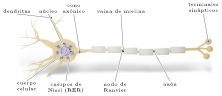
| Estructura | ¿Para qué le sirve? |
|---|---|
| Dendritas ramificadas | Gran superficie para recibir señales de miles de otras neuronas |
| Axón largo (hasta 1 m) | Conduce el impulso a distancia; microtúbulos como rieles para llevar vesículas desde el cuerpo celular |
| Vaina de mielina (de otras células) | Aislante lipídico: el impulso “salta” entre nodos y viaja hasta 100 veces más rápido |
| Cuerpos de Nissl (RER) y nucléolo grande | Gran síntesis de proteínas (canales, bombas, enzimas que fabrican neurotransmisores) que se distribuyen por todo el axón |
| Mitocondrias (en terminales) | ATP para las bombas Na+/K+ (mantienen el potencial de reposo) y la liberación de vesículas |
| Vesículas sinápticas | Liberan neurotransmisores por exocitosis (comunicación química) |
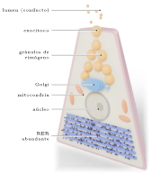
| Estructura | ¿Para qué le sirve? |
|---|---|
| RER abundante (citoplasma basal teñido) | Síntesis masiva de proteínas de exportación |
| Núcleo con nucléolo grande | Produce los muchos ribosomas que se requieren |
| Aparato de Golgi desarrollado | Modifica y empaqueta las enzimas |
| Gránulos de cimógeno (vesículas) | Guardan las enzimas como precursores inactivos; se liberan por exocitosis solo ante una señal (secreción regulada) |
| Mitocondrias | ATP para síntesis y exocitosis |
| Célula | Función | Estructuras destacadas | Si se dañan… |
| Enterocito | Absorber nutrientes | Microvellosidades, mitocondrias, uniones estrechas, transportadores | Menor absorción: desnutrición, diarrea (celiaquía) |
| Fibra muscular esquelética | Contraerse | Sarcómeros (actina–miosina), mitocondrias, retículo sarcoplásmico (Ca2 + ), varios núcleos | Debilidad, fatiga, calambres |
| Neurona | Conducir y transmitir señales | Dendritas, axón con mielina, RER (Nissl), vesículas sinápticas, mitocondrias | Conducción lenta o bloqueada (esclerosis múltiple) |
| Célula acinar del páncreas | Secretar enzimas digestivas | RER, Golgi, gránulos de cimógeno, nucléolo grande | Mala digestión de grasas y proteínas |
| Célula beta del páncreas | Secretar insulina | RER, Golgi, gránulos de secreción | Diabetes tipo 1 (si se destruyen) |
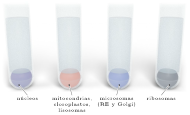
| Fracción | ADN | Consumo de O2 | Hidrolasa ácida | ARNr |
|---|---|---|---|---|
| 1 | +++ | – | – | + |
| 2 | + | +++ | ++ | + |
| 3 | – | – | + | +++ |
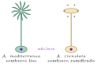
| Procedimiento | Resultado |
|---|---|
| Se corta el sombrero | Regenera uno nuevo de su especie |
| Se injerta un tallo de crenulata sobre una base con núcleo de mediterranea | El sombrero nuevo termina siendo de tipo mediterranea |
| Fragmento de tallo sin núcleo | Puede formar un sombrero una vez; luego no regenera |
| Si se bloquea… | Consecuencia esperada |
|---|---|
| La respiración (cianuro) | Cae el ATP: se detienen el transporte activo, la contracción, la exocitosis y el movimiento de cilios. La difusión y la osmosis siguen |
| El Golgi | Las proteínas de exportación se acumulan en el RER: no hay secreción ni lisosomas nuevos |
| Los ribosomas 70S (ciertos antibióticos) | Se detiene la síntesis de proteínas en bacterias; efecto parcial en las mitocondrias (también 70S) |
| Los microtúbulos (colchicina) | No hay huso: la división se detiene; falla el transporte axónico |
| La bomba de H+ del lisosoma | Sube el pH interno: sus enzimas pierden actividad y se acumula material sin digerir |
| El nucléolo | Faltan ribosomas nuevos: con el tiempo baja la síntesis de todas las proteínas |
| Error | Lo correcto |
|---|---|
| “Las células vegetales no tienen mitocondrias” | Tienen mitocondrias y cloroplastos; respiran siempre |
| “La pared celular es selectiva” | La pared es permeable; la selectiva es la membrana |
| “Las bacterias no tienen ribosomas ni ADN” | Tienen ambos (70S; ADN circular en el nucleoide): les falta el núcleo y los organelos membranosos |
| “La mitocondria crea energía” | Transforma la energía química de la glucosa en ATP (la energía no se crea) |
| “Los cilios y las microvellosidades son lo mismo” | Cilios: microtúbulos, se mueven. Microvellosidades: actina, aumentan la superficie |
| “Una célula con más ribosomas libres secreta más” | Secretar proteínas exige ribosomas del RER, Golgi y vesículas |
| “Todas las células de un organismo tienen los mismos organelos en igual cantidad” | Tienen el mismo ADN, pero cada tipo desarrolla los organelos que su función requiere |
| “Los centriolos son indispensables para dividirse” | Las plantas con flor se dividen sin centriolos |
| Habilidad | Qué se te pide (criterios DEMRE) | Ejemplo en el eje célula |
|---|---|---|
| Observar y plantear preguntas | Identificar preguntas investigables (relacionan variables medibles) e hipótesis (explicaciones tentativas que se ponen a prueba). | “Las células del músculo de un atleta tienen más mitocondrias. ¿Qué hipótesis lo explica?” → el entrenamiento aumenta la demanda de ATP y estimula su formación. |
| Planificar y conducir una investigación | Reconocer variables, grupo control, procedimiento, instrumentos y las evidencias que sustentan teorías (teoría celular, endosimbiosis, mosaico fluido). | “¿Cuál es la variable dependiente al estudiar el efecto de la concentración de sal en glóbulos rojos?” → el estado de las células (hinchadas, normales, arrugadas). |
| Procesar y analizar la evidencia | Encontrar relaciones, patrones o tendencias en tablas y gráficos, hacer predicciones e inferencias. | “Según la tabla, ¿qué célula secreta proteínas?” → la de mayor proporción de RER y Golgi. “¿En qué concentración la papa no cambia de masa?” |
| Evaluar | Juzgar validez, confiabilidad, alcances y limitaciones de una investigación o conclusión; el aporte de la tecnología (microscopio) al conocimiento. | “¿Qué limitación tiene concluir, con una sola célula de raíz, que las plantas no tienen cloroplastos?” → la muestra no es representativa. |
| Comunicar | Elegir el recurso adecuado: tabla, gráfico (de líneas para variables continuas, de barras para categorías), esquema o modelo. | “¿Cómo presentar el número de mitocondrias en cuatro tipos celulares?” → gráfico de barras (categorías). |
| Observación | Las hojas de lechuga aliñadas con sal pierden firmeza en pocos minutos. |
| Problema | ¿Cómo influye la concentración de sal del medio en el volumen de las células vegetales? |
| Objetivo | Determinar el efecto de la concentración de NaCl sobre las células de la epidermis de cebolla morada. |
| Hipótesis | A mayor concentración de sal, las células pierden más agua por osmosis y se retraen más (plasmólisis). |
| Predicción | Con NaCl al 5% se verán más células plasmolizadas que con NaCl al 1%. |
| Variables | VI: concentración de NaCl. VD: % de células plasmolizadas. Controladas: tiempo de exposición, temperatura, tipo de tejido, tamaño de la muestra. |
| Control | Muestra en agua destilada (sin sal). |
| Procedim. | Montar trozos de epidermis en cada solución; contar 100 células al microscopio después de 10 min; 3 repeticiones. |
| Resultados | 0%: 0 plasmolizadas; 1%: 12; 3%: 64; 5%: 97. |
| Conclusión | Al aumentar la concentración aumenta la plasmólisis: se apoya la hipótesis (para este tejido y este rango). |
| Pregunta | ¿Investigable? |
|---|---|
| ¿Cómo influye la temperatura en la rapidez de la osmosis en la papa? | Sí |
| ¿Tienen más mitocondrias las fibras musculares de un atleta que las de una persona sedentaria? | Sí |
| ¿Es la mitocondria el organelo más importante? | No (juicio de valor) |
| ¿Es bonita la célula vegetal al microscopio? | No (opinión) |
| Célula | RER | REL | Mitocondrias |
|---|---|---|---|
| 1 | Muy abundante | Escaso | Abundantes |
| 2 | Escaso | Muy abundante | Abundantes |
| Solución | Observación |
|---|---|
| X | Células arrugadas |
| Y | Células normales |
| Z | Células estalladas |
Fin de la teoría · comienza la ejercitación
Eje 1 · Organización, estructura y actividad celular › Ejercitación
Toca una alternativa para responder. En modo ensayo no verás si acertaste hasta que presiones «Corregir el eje», como en la prueba. Tus respuestas quedan guardadas en este aparato.
| Lado | S | V | S/V |
| 1 | 6 | 1 | 6 |
| 3 | 54 | 27 | 2 |
| 6 | 216 | 216 | 1 |
| Núcleo | Pared | Clorofila | Cloropl. | |
| K | + | + | + | + |
| L | − | + | + | − |
| M | + | − | − | − |
| N | − | + | − | − |
| Medio | Sin penicilina | Con penicilina |
| Hipotónico | Crecen normales | Estallan |
| Isotónico | Crecen normales | Sobreviven, esféricas |
| Sacarosa (M) | Δ masa (%) |
| 0 | +15 |
| 0,1 | +8 |
| 0,3 | −4 |
| 0,5 | −12 |
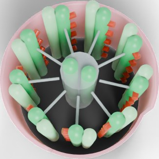
| Tiempo | RER | Golgi | Gránulos |
| 3 min | 80 | 10 | 5 |
| 20 min | 20 | 60 | 15 |
| 90 min | 5 | 10 | 70 |
| Condición | CO2 en el recipiente |
| Luz intensa | Disminuye |
| Oscuridad | Aumenta |
| Sal (%) | Descargas/min |
| 0 | 20 |
| 0,25 | 10 |
| 0,5 | 3 |
| Pared de celulosa | + |
| Cloroplastos | − |
| Vacuola central | + |
| Centriolos | − |
| RER | REL | Mitocondrias | |
| K | 35 | 1 | 8 |
| L | 2 | 20 | 20 |
| M | 3 | 2 | 35 |
| N | 1 | 1 | 2 |
| Fracción | ADN | Consumo de O2 | ARNr |
| 1 | Alto | Nulo | Bajo |
| 2 | Bajo | Alto | Bajo |
| 3 | Nulo | Nulo | Alto |
Eje 1 · Organización, estructura y actividad celular › Pauta y especificaciones
| Contenido / habilidad | Preguntas | Mis aciertos |
| Teoría celular, tamaños y microscopía | 1–6 | –/6 |
| Células procariontes y eucariontes | 7–12 | –/6 |
| Membrana plasmática y transporte | 13–18 | –/6 |
| Pared, citoesqueleto, centriolos, cilios y flagelos | 19–24 | –/6 |
| Núcleo, ribosomas y endomembranas | 25–30 | –/6 |
| Mitocondrias, cloroplastos, peroxisomas y vacuolas | 31–36 | –/6 |
| Célula animal y vegetal | 37–42 | –/6 |
| Estructura y función celular | 43–48 | –/6 |
| Análisis de experimentos celulares | 49–54 | –/6 |
| Habilidades de pensamiento científico | 55–60 | –/6 |
| Habilidad: observar y plantear preguntas | 6, 48, 55 | –/3 |
| Habilidad: planificar y conducir una investigación | 18, 52, 56, 57 | –/4 |
| Habilidad: procesar y analizar la evidencia | 2, 5, 9, 11, 15, 16, 22, 23, 27, 29, 33, 36, 39, 40, 46, 50, 51, 54 | –/18 |
| Habilidad: evaluar | 3, 12, 30, 35, 42, 53, 59, 60 | –/8 |
| Habilidad: comunicar | 41, 58 | –/2 |
| Si fallaste en… | Repasa |
|---|---|
| Teoría celular y microscopía | Bloque A: postulados, unidades, tamaño real |
| Procariontes / eucariontes | Bloque B: tabla comparativa y “cómo se distinguen” |
| Membrana y transporte | Bloque C: tabla de mecanismos; papa y glóbulos rojos |
| Pared, citoesqueleto, cilios | Bloque D: tabla de filamentos; 9 × 3 vs 9 × 2 + 2 |
| Núcleo y endomembranas | Bloque E: ruta secretora y Palade |
| Organelos energéticos | Bloque F y tabla maestra |
| Estructura–función | Bloque G: las cuatro células y la síntesis comparativa |
| Experimentos | Bloque H: fraccionamiento e inhibidores |
Eje 2 · Procesos y funciones biológicas › Teoría
Eje 2
En esta área temática se evaluará la capacidad de analizar investigaciones, teorías o leyes científicas asociadas a las características generales del sistema nervioso y sus cuidados; las dimensiones de la sexualidad humana y la reproducción; el funcionamiento de los principales métodos de control de la natalidad y las características generales de las infecciones de transmisión sexual.
| Concepto | ¿Qué es? | Ejemplo o clave |
|---|---|---|
| Sistema nervioso | Red de órganos y células que recibe estímulos, los integra y elabora respuestas, coordinando al organismo. | Retirar la mano de algo caliente. |
| Impulso nervioso | Cambio eléctrico breve (potencial de acción) que viaja por la membrana de la neurona. | Se propaga más rápido en axones con mielina. |
| Sinapsis química | Unión entre una neurona y otra célula donde la señal pasa mediante neurotransmisores. | Acetilcolina en la unión neuromuscular. |
| Gametos | Células sexuales haploides (n = 23) que se unen en la fecundación. | Espermatozoide y ovocito. |
| Ciclo sexual femenino | Cambios cíclicos (≈28 días) en ovario y útero controlados por hormonas. | Ovulación ≈ día 14 (ciclo de 28 días). |
| Anticoncepción e ITS | Métodos para regular la fecundidad; infecciones transmitidas por contacto sexual. | Solo el condón protege de ITS y embarazo. |
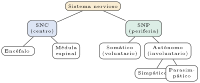
| Estructura | Función principal |
|---|---|
| Cerebro | Corteza: pensamiento, memoria, lenguaje, actos voluntarios, interpretación de las sensaciones. |
| Cerebelo | Equilibrio, coordinación y precisión de los movimientos. |
| Tronco encefálico | Funciones vitales: respiración, ritmo cardíaco, presión, deglución, vigilia. |
| Hipotálamo | Temperatura, hambre, sed; controla la hipófisis (une nervioso y endocrino). |
| Médula espinal | Conduce impulsos entre el cuerpo y el encéfalo; centro de reflejos. |
| Nervios (SNP) | Haces de axones que conectan el SNC con receptores y efectores. |

| Parte | Estructura y función |
|---|---|
| Dendritas | Prolongaciones cortas y ramificadas: reciben señales (zona de entrada). |
| Cuerpo celular (soma) | Núcleo y organelos; muchos ribosomas y RER (cuerpos de Nissl): fabrica proteínas y neurotransmisores; integra las señales. |
| Cono axónico | Zona donde se “decide” si se genera el impulso (alcanza el umbral). |
| Axón | Prolongación única, a veces de 1 m: conduce el impulso lejos del soma. |
| Vaina de mielina | Capas de membrana de células de Schwann (SNP) u oligodendrocitos (SNC). Aislante: aumenta la velocidad. |
| Nodos de Ranvier | Espacios sin mielina donde se regenera el impulso. |
| Terminales axónicos | Botones con vesículas de neurotransmisores: transmiten la señal (sinapsis). |
| Tipo (función) | Qué hace |
|---|---|
| Sensitiva (aferente) | Lleva información de los receptores al SNC. |
| Interneurona (de asociación) | Conecta neuronas dentro del SNC; integra. Son las más numerosas. |
| Motora (eferente) | Lleva órdenes del SNC a músculos o glándulas. |
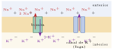
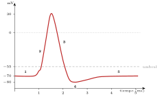
| Fase | Qué ocurre | |
|---|---|---|
| 1 | Reposo | −70 mV. Un estímulo despolariza levemente la membrana. |
| 2 | Despolarización | Al llegar al umbral (≈−55 mV) se abren canales de Na+: entra Na+ y el interior se vuelve positivo (≈+30 mV). |
| 3 | Repolarización | Se cierran los canales de Na+ y se abren los de K+: sale K+ y el interior vuelve a ser negativo. |
| 4 | Hiperpolarización | Sale un poco de K+ de más (≈−80 mV): período refractario. |
| 5 | Recuperación | La bomba Na+/K+ restablece las concentraciones. |
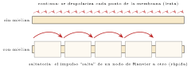
| Tipo de axón | Diámetro | Velocidad |
|---|---|---|
| Sin mielina, delgado | 1 μm | ≈1 m/s |
| Sin mielina, gigante (calamar) | 500 μm | ≈25 m/s |
| Con mielina (humano, motor) | 15 μm | ≈100 m/s |
| Condición | Resultado |
|---|---|
| Agua de mar normal | Potencial de acción normal (+30 mV) |
| Agua de mar con poco Na+ | Pico más bajo (+5 mV) |
| Tetrodotoxina (bloquea canales de Na+) | No hay potencial de acción |
| Cianuro (bloquea la producción de ATP), primeros minutos | Potenciales normales |
| Cianuro, después de horas | Desaparecen los potenciales |
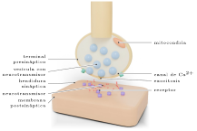
| 1 | El potencial de acción llega al terminal axónico. |
| 2 | Se abren canales de Ca2 + dependientes de voltaje: entra Ca2 + . |
| 3 | El Ca2 + provoca que las vesículas se fusionen con la membrana y liberen el neurotransmisor (NT) por exocitosis. |
| 4 | El NT difunde por la hendidura. |
| 5 | El NT se une a receptores específicos de la membrana postsináptica (como llave y cerradura); se abren canales iónicos. |
| 6 | Respuesta: si entra Na+, la célula se despolariza (sinapsis excitatoria); si entra Cl− o sale K+, se hiperpolariza (sinapsis inhibitoria). |
| 7 | Fin de la señal: el NT se elimina por degradación enzimática (p. ej., acetilcolinesterasa), recaptura hacia el terminal o difusión. Sin este paso, la señal seguiría activa. |
| NT | Funciones y relaciones |
|---|---|
| Acetilcolina | Contracción muscular (unión neuromuscular), memoria, parasimpático. |
| Dopamina | Placer y recompensa (motivación), control del movimiento. Su déficit se asocia al Parkinson. |
| Serotonina | Estado de ánimo, sueño, apetito. Su déficit se asocia a la depresión. |
| Noradrenalina | Alerta, atención, respuesta al estrés (simpático). |
| Glutamato | Principal excitatorio del SNC; aprendizaje. |
| GABA | Principal inhibitorio del SNC; calma la actividad neuronal. |
| Endorfinas | “Analgésicos naturales”: disminuyen el dolor; producen bienestar. |
| Mecanismo | Ejemplo | Efecto |
|---|---|---|
| Imita al NT (agonista) | Nicotina (sobre receptores de acetilcolina) | Activa la sinapsis sin NT |
| Bloquea el receptor (antagonista) | Curare; cafeína (sobre receptores de adenosina) | Impide la señal (curare: parálisis; cafeína: impide la “señal de cansancio”) |
| Impide la recaptura | Cocaína (dopamina); antidepresivos (serotonina) | El NT permanece más tiempo en la hendidura |
| Inhibe la enzima que degrada | Insecticidas organofosforados (acetilcolinesterasa) | Contracciones sostenidas, convulsiones |
| Impide la liberación | Toxina botulínica | Parálisis flácida |
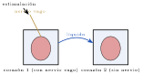
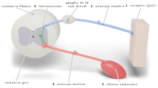
| Componente | Función (ej.: retirar la mano del fuego) | |
|---|---|---|
| 1 | Receptor | Terminaciones de la piel detectan el calor. |
| 2 | Neurona sensitiva | Lleva el impulso a la médula por la raíz dorsal; su soma está en el ganglio de la raíz dorsal. |
| 3 | Centro integrador | En la sustancia gris de la médula: interneurona(s). |
| 4 | Neurona motora | Sale por la raíz ventral hacia el músculo. |
| 5 | Efector | El músculo flexor se contrae: se retira la mano. |
| Lesión en… | ¿Siente? | ¿Reflejo? | ¿Mueve a voluntad? |
|---|---|---|---|
| Neurona sensitiva | No | No | Sí |
| Neurona motora | Sí | No | No |
| Médula sobre el arco (corte alto) | No | Sí | No |
| Situación | Tiempo medio (ms) |
|---|---|
| Reflejo rotuliano | 30 |
| Atrapar una regla que cae (voluntario) | 200 |
| Atrapar la regla tras beber alcohol | 280 |
| Atrapar la regla con privación de sueño | 260 |
| Sustancia | Tipo | Mecanismo en la sinapsis | Efectos a corto plazo | Consecuencias del consumo frecuente |
| Cafeína (café, té, bebidas energéticas) | Estimulante | Antagonista de los receptores de adenosina (NT que se acumula con la vigilia y produce somnolencia) | Alerta, menos sueño, aumento de la frecuencia cardíaca | Insomnio, ansiedad, taquicardia; dependencia leve (cefalea al suspender) |
| Alcohol (etanol) | Depresor | Potencia el efecto del GABA (inhibidor) y reduce el del glutamato | Desinhibición, menor coordinación (cerebelo), reflejos lentos, juicio alterado; en dosis altas, coma | Daño hepático (cirrosis) y cerebral, dependencia, accidentes, violencia. En adolescentes, afecta el desarrollo cerebral |
| Nicotina (tabaco) | Estimulante | Agonista de receptores de acetilcolina; libera dopamina | Alerta, sensación de relajación | Altísima dependencia; el humo causa cáncer, enfermedad pulmonar y cardiovascular |
| Marihuana (THC) | Perturbador | Activa receptores cannabinoides | Alteración de la percepción y la memoria, menor coordinación | Problemas de memoria y atención; mayor riesgo de psicosis en adolescentes |
| Cocaína y pasta base | Estimulante | Bloquea la recaptura de dopamina (y noradrenalina) | Euforia intensa y breve, aumento de presión | Gran dependencia, infartos, daño cerebral, deterioro social |
| Opioides (morfina, heroína) | Depresor | Activan receptores de endorfinas | Analgesia, euforia, depresión respiratoria | Dependencia severa; riesgo de muerte por paro respiratorio |
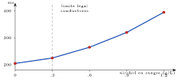
| Edad | Horas recomendadas |
|---|---|
| Escolares (6–12 años) | 9–12 |
| Adolescentes (13–18 años) | 8–10 |
| Adultos | 7–9 |
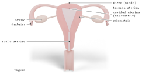
| Órgano | Función |
|---|---|
| Ovarios | Gónadas: producen ovocitos (ovogénesis) y las hormonas estrógenos y progesterona. |
| Trompas uterinas (de Falopio) | Captan el ovocito con sus fimbrias; lugar de la fecundación (tercio externo); sus cilios y contracciones llevan el embrión al útero. |
| Útero | Órgano muscular donde se implanta y desarrolla el embrión. Capas: endometrio (mucosa interna que cambia cada ciclo) y miometrio (músculo que se contrae en el parto). |
| Cuello uterino (cérvix) | Comunica útero y vagina; produce moco cervical que cambia en el ciclo. |
| Vagina | Conducto que recibe el pene en el coito; canal del parto y de salida de la menstruación. |
| Vulva | Genitales externos: labios mayores y menores, clítoris, orificio vaginal. |
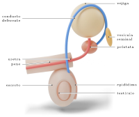
| Órgano | Función |
|---|---|
| Testículos | Gónadas: producen espermatozoides en los túbulos seminíferos y testosterona (células de Leydig). Están en el escroto, ≈2 °C bajo la temperatura corporal, necesario para la espermatogénesis. |
| Epidídimo | Los espermatozoides maduran y adquieren movilidad; se almacenan. |
| Conducto deferente | Transporta los espermatozoides hacia la uretra. (Se corta en la vasectomía.) |
| Vesículas seminales | Secretan líquido rico en fructosa (energía para el espermatozoide); ≈60% del semen. |
| Próstata | Secreta líquido alcalino que neutraliza la acidez de la vagina. |
| Glándulas bulbouretrales | Moco que lubrica y limpia la uretra (preeyaculatorio: puede contener espermatozoides). |
| Uretra y pene | La uretra conduce semen u orina (nunca a la vez). El pene es el órgano copulador; su erección se debe al llenado de tejido eréctil con sangre. |
| Hombre | Mujer | |
|---|---|---|
| FSH | Estimula la espermatogénesis | Estimula el desarrollo de los folículos |
| LH | Estimula la producción de testosterona | Provoca la ovulación y forma el cuerpo lúteo |
| Gónada produce | Testosterona | Estrógenos y progesterona |
| Dimensión | Incluye |
|---|---|
| Biológica | Anatomía y fisiología, respuesta sexual, reproducción, salud sexual (prevención de ITS y embarazos no planificados). |
| Psicológica y afectiva | Emociones, deseo, autoestima, imagen corporal, identidad, capacidad de establecer vínculos de afecto y confianza. |
| Social y cultural | Normas, valores, roles de género, influencia de la familia, los pares y los medios; derechos. |
| Ética | Decisiones responsables, respeto por la dignidad y la autonomía de la otra persona. |
| Espermatogénesis | Ovogénesis | |
|---|---|---|
| Lugar | Túbulos seminíferos del testículo | Ovario (termina en la trompa si hay fecundación) |
| Inicio | Pubertad; continúa toda la vida | Antes del nacimiento; se detiene en profase I hasta la pubertad |
| Productos por meiosis | 4 espermatozoides iguales | 1 ovocito grande + 2–3 cuerpos polares (se degeneran) |
| Cantidad | Millones por día | ≈400 ovocitos ovulan en la vida |
| Término | Cíclico continuo | Ovula como ovocito II en metafase II; completa la meiosis solo si es fecundado |
| Cromosomas sexuales | 50 % con X y 50 % con Y | Siempre X |
| Parte | Estructura–función |
|---|---|
| Acrosoma | Vesícula (derivada del Golgi) con enzimas hidrolíticas que perforan las cubiertas del ovocito. |
| Núcleo | ADN haploide muy compactado: cabeza pequeña e hidrodinámica. |
| Pieza intermedia | Mitocondrias en espiral: producen el ATP para nadar. |
| Flagelo (cola) | Axonema 9 × 2 + 2 con dineína: movimiento. |
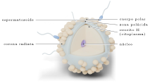
| 1 | Capacitación: en el tracto femenino el espermatozoide se modifica y se vuelve capaz de fecundar. |
| 2 | Atraviesa la corona radiata (células foliculares) nadando entre ellas. |
| 3 | Reacción acrosómica: al unirse a la zona pelúcida (capa de glicoproteínas) libera las enzimas del acrosoma y la perfora. Esta unión es específica de la especie. |
| 4 | Fusión de las membranas: el núcleo del espermatozoide entra al ovocito. |
| 5 | Bloqueo de la polispermia: la zona pelúcida cambia (reacción cortical) e impide la entrada de otro espermatozoide. |
| 6 | El ovocito completa la meiosis II (expulsa el 2.° cuerpo polar). |
| 7 | Se unen los pronúcleos masculino y femenino: se forma el cigoto (2n = 46), primera célula del nuevo individuo. |
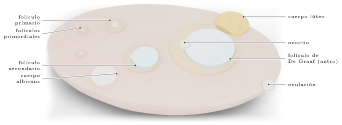
| Fase | Días | Qué ocurre |
|---|---|---|
| Folicular | 1–13 | La FSH estimula el crecimiento de varios folículos; uno domina y llega a folículo de De Graaf (maduro). Sus células secretan estrógenos, que van en aumento. |
| Ovulación | ≈14 | Un peak de LH provoca la ruptura del folículo y la liberación del ovocito II hacia la trompa. |
| Lútea | 15–28 | Los restos del folículo forman el cuerpo lúteo, que secreta progesterona (y estrógenos). Si no hay embarazo, degenera (≈ día 24) en cuerpo albicans. |
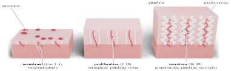
| Fase | Días | Qué ocurre |
|---|---|---|
| Menstrual | 1–5 | Al caer la progesterona, la capa funcional del endometrio se desprende: sangrado (menstruación). |
| Proliferativa | 6–14 | Los estrógenos hacen que el endometrio se regenere y engrose; glándulas rectas. |
| Secretora | 15–28 | La progesterona lo hace más grueso y vascularizado; glándulas enrolladas que secretan nutrientes (glucógeno): listo para la implantación. |
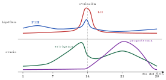
| Situación | FSH y LH | Explicación |
|---|---|---|
| Extirpación de ambos ovarios | ↑↑ | Desaparece la inhibición de estrógenos y progesterona |
| Menopausia (≈50 años) | ↑↑ | Se agotan los folículos: no hay estrógenos |
| Uso de píldora combinada | ↓ | Hormonas sintéticas inhiben a la hipófisis |
| Embarazo | ↓ | Progesterona y estrógenos muy altos |
| Error | Lo correcto |
|---|---|
| “La ovulación es siempre el día 14” | Solo en ciclos de 28 días; ocurre ≈14 días antes de la siguiente menstruación |
| “La menstruación es el período fértil” | Es el inicio del ciclo; el período fértil rodea la ovulación |
| “La progesterona produce la ovulación” | La produce el peak de LH; la progesterona viene después |
| “El cuerpo lúteo está en el útero” | Está en el ovario |
| “Los estrógenos solo existen en la fase folicular” | El cuerpo lúteo también los secreta (segundo aumento) |
| “FSH y LH las produce el ovario” | Las produce la hipófisis |
| Método | Tipo | Mecanismo | Falla típica | ¿ITS? | ¿Reversible? |
| Calendario (Ogino–Knaus) | Natural | Evitar relaciones en los días fértiles estimados con la duración de ciclos anteriores | ≈15–24% | No | Sí |
| Billings (moco cervical) | Natural | Reconocer el moco fértil (transparente, elástico) y abstenerse esos días | ≈15–23% | No | Sí |
| Temperatura basal | Natural | Detectar el alza de temperatura posovulatoria; relaciones solo después | ≈15–24% | No | Sí |
| Condón masculino / femenino | Artificial, barrera | Impide el paso de los espermatozoides a la vagina/útero | ≈13% / 21% | Sí | Sí |
| Píldora combinada, inyectable, parche, anillo | Artificial, hormonal | Estrógeno y progestina inhiben FSH y LH (retroalimentación negativa): no hay ovulación; espesan el moco | ≈7% | No | Sí |
| Implante subdérmico | Artificial, hormonal | Progestina: inhibe la ovulación y espesa el moco; dura 3–5 años | <1% | No | Sí |
| DIU (cobre u hormonal) | Artificial, dispositivo intrauterino | Cobre: tóxico para los espermatozoides; hormonal: espesa el moco | <1% | No | Sí |
| Anticoncepción de emergencia | Artificial, hormonal | Retrasa o impide la ovulación; se usa hasta 72–120 h después de una relación sin protección; no es un método regular | — | No | Sí |
| Vasectomía | Quirúrgico | Corte y ligadura de los conductos deferentes: el semen sale sin espermatozoides (no altera erección ni eyaculación) | <1% | No | Parcial* |
| Salpingoligadura (ligadura tubaria) | Quirúrgico | Corte u oclusión de las trompas: el ovocito y los espermatozoides no se encuentran (ciclo y menstruación siguen) | <1% | No | Parcial* |
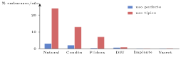
| Paso que se impide | Métodos |
|---|---|
| Producción o liberación de gametos | Hormonales (inhiben la ovulación); vasectomía (los espermatozoides no salen) |
| Encuentro de los gametos | Condón, diafragma, salpingoligadura, métodos naturales (abstinencia periódica), DIU de cobre |
| Ambiente desfavorable para el espermatozoide | Progestinas (moco espeso), DIU de cobre |
| ITS | Agente patógeno | Transmisión | Síntomas generales | Tratamiento |
| VIH / sida | Virus (retrovirus): VIH | Sexual, sanguínea (agujas, transfusiones) y vertical (madre-hijo) | Infección aguda parecida a una gripe; luego años sin síntomas; al destruirse los linfocitos T CD4 aparece el sida: infecciones oportunistas, tumores, baja de peso | Antirretrovirales: no curan, pero controlan el virus; con carga viral indetectable no se transmite por vía sexual |
| Herpes genital | Virus: herpes simple (VHS-2, a veces VHS-1) | Contacto de piel o mucosas con lesiones (también sin lesiones visibles) | Vesículas dolorosas que se rompen y forman úlceras; ardor; brotes recurrentes (el virus queda latente en neuronas) | Antivirales: acortan los brotes; no tiene cura |
| Gonorrea | Bacteria: Neisseria gonorrhoeae (gonococo) | Sexual; vertical en el parto (conjuntivitis del recién nacido) | Secreción purulenta por uretra, ardor al orinar; en mujeres a menudo asintomática; puede causar infertilidad | Antibióticos (hay cepas resistentes) |
| Clamidia | Bacteria: Chlamydia trachomatis (intracelular) | Sexual; vertical en el parto | Frecuentemente sin síntomas; secreción, dolor; inflamación de las trompas: infertilidad y embarazo ectópico | Antibióticos |
| Sífilis (complementaria) | Bacteria: Treponema pallidum | Sexual y vertical | Chancro indoloro; luego erupciones; daño cardíaco y nervioso | Antibióticos (penicilina) |
| VPH (complementaria) | Virus del papiloma humano | Contacto de piel y mucosas | Verrugas genitales; algunos tipos causan cáncer cervicouterino | Prevención con vacuna |
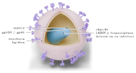
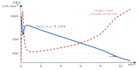
| Persona | ITS | Resultado |
|---|---|---|
| 1 | Clamidia | Curada |
| 2 | Herpes genital | Sin cambios en los brotes |
| 3 | Gonorrea | Curada; a los 2 meses se reinfecta |
| Habilidad | Qué se te pide (criterios DEMRE) | Ejemplo en este eje |
|---|---|---|
| Observar y plantear preguntas | Identificar preguntas investigables e hipótesis que expliquen una observación. | “Los estudiantes que duermen menos de 6 horas rinden peor. ¿Qué hipótesis lo explica?” → el sueño consolida la memoria. |
| Planificar y conducir una investigación | Reconocer variables, grupo control, procedimiento y las evidencias que sustentan modelos (neurotransmisión química, regulación hormonal). | “Para estudiar el efecto de la cafeína en el tiempo de reacción, ¿qué debe recibir el grupo control?” → un placebo idéntico sin cafeína. |
| Procesar y analizar la evidencia | Encontrar patrones y tendencias en gráficos (hormonas, potenciales, CD4), calcular y predecir. | “Según el gráfico, ¿qué hormona alcanza su máximo justo antes de la ovulación?” → LH. |
| Evaluar | Juzgar validez, confiabilidad y alcances; distinguir correlación de causalidad; valorar el aporte de la ciencia a la salud. | “¿Qué limita concluir que un método natural es eficaz a partir de 10 mujeres por 2 meses?” → muestra pequeña y breve. |
| Comunicar | Elegir el recurso adecuado para presentar resultados. | “¿Cómo mostrar la variación de cuatro hormonas durante 28 días?” → gráfico de líneas con el día en el eje x. |
| Observación | Muchos estudiantes toman bebidas energéticas antes de una prueba para “estar más atentos”. |
| Problema | ¿Cómo influye la cafeína en el tiempo de reacción? |
| Hipótesis | La cafeína disminuye el tiempo de reacción porque bloquea los receptores de adenosina y aumenta el estado de alerta. |
| Predicción | El grupo con cafeína atrapará una regla que cae en menos tiempo que el grupo control. |
| Variables | VI: consumo de cafeína (sí/no). VD: tiempo de reacción (ms). Controladas: horas de sueño, hora del día, edad, tipo de prueba. |
| Diseño | 40 voluntarios asignados al azar a dos grupos: uno recibe una cápsula con cafeína y otro un placebo idéntico; ni ellos ni el evaluador saben quién recibió qué (doble ciego). 10 mediciones por persona. |
| Resultados | Cafeína: 185 ms; placebo: 205 ms (promedios). |
| Conclusión | La cafeína disminuyó el tiempo de reacción: se apoya la hipótesis para jóvenes sanos y esa dosis. |
Fin de la teoría · comienza la ejercitación
Eje 2 · Procesos y funciones biológicas › Ejercitación
Toca una alternativa para responder. En modo ensayo no verás si acertaste hasta que presiones «Corregir el eje», como en la prueba. Tus respuestas quedan guardadas en este aparato.
| Axón | Diámetro (μm) | Mielina | Velocidad (m/s) |
| P | 2 | No | 1 |
| Q | 2 | Sí | 12 |
| R | 10 | Sí | 60 |
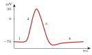
| Estímulo | Despolarización inicial |
| W | hasta −65 mV |
| X | hasta −58 mV |
| Y | hasta −50 mV |
| Z | hasta −40 mV |
| Situación | Tiempo (ms) |
| Retirar la mano al pincharse | 40 |
| Presionar un botón al ver una luz | 220 |
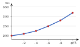
| Día | Estrógenos | LH | Progesterona |
| K | Bajo | Bajo | Bajo |
| L | Alto | Muy alto | Bajo |
| M | Medio | Bajo | Alto |
| N | Medio | Bajo | Bajo |
| Método | Uso perfecto | Uso típico |
| Condón | 2 | 13 |
| Píldora | 0,3 | 7 |
| Implante | 0,1 | 0,1 |
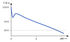
Eje 2 · Procesos y funciones biológicas › Pauta y especificaciones
| Contenido / habilidad | Preguntas | Mis aciertos |
| Organización del sistema nervioso y neurona | 61–66 | –/6 |
| Impulso nervioso | 67–72 | –/6 |
| Sinapsis química | 73–78 | –/6 |
| Arco reflejo | 79–84 | –/6 |
| Drogas y cuidados del sistema nervioso | 85–90 | –/6 |
| Sistemas reproductores, gametos y fecundación | 91–96 | –/6 |
| Ciclo ovárico y uterino | 97–102 | –/6 |
| Métodos de control de la natalidad | 103–108 | –/6 |
| ITS y sexualidad | 109–114 | –/6 |
| Habilidades de pensamiento científico | 115–120 | –/6 |
| Habilidad: observar y plantear preguntas | 94, 115, 120 | –/3 |
| Habilidad: planificar y conducir una investigación | 84, 116, 117 | –/3 |
| Habilidad: procesar y analizar la evidencia | 66, 69–71, 74, 76, 81, 82, 88, 96, 99, 101, 105, 108, 112, 113 | –/16 |
| Habilidad: evaluar | 77, 90, 102, 119 | –/4 |
| Habilidad: comunicar | 118 | –/1 |
| Si fallaste en… | Repasa |
|---|---|
| Neurona y organización | Bloque A: vías aferente/eferente, partes de la neurona |
| Impulso nervioso | Bloque B: gráfico del potencial de acción y tabla de fases |
| Sinapsis | Bloque C: los 7 pasos y la tabla de sustancias |
| Arco reflejo | Bloque D: componentes y tabla de lesiones |
| Drogas y cuidados | Bloque E: mecanismos, tolerancia, sueño |
| Reproducción | Bloques F y G: órganos, gametos y fecundación |
| Ciclo sexual | Bloque H: gráfico hormonal y secuencia causal |
| Anticoncepción | Bloque I: tabla de métodos y calendario |
| ITS | Bloque J: virus vs bacterias; VIH y CD4 |
Eje 3 · Herencia y evolución › Teoría
Eje 3
En esta área temática se evaluará la capacidad de analizar investigaciones, teorías o leyes científicas asociadas a los procesos de división celular y meiosis; las concepciones y teorías acerca del origen de la diversidad de especies y la evidencia científica en que se sustentan, considerando el análisis de los principales mecanismos evolutivos que afectan la variabilidad genética.
| Concepto | ¿Qué es? | Ejemplo o clave |
|---|---|---|
| Ciclo celular | Secuencia ordenada de crecimiento (interfase) y división (fase M) de una célula, regulada por puntos de control. | Su descontrol origina el cáncer. |
| Mitosis | División que produce dos células idénticas a la madre (igual número de cromosomas). | Crecimiento y reparación de tejidos. |
| Meiosis | Dos divisiones que producen cuatro células haploides genéticamente distintas. | Formación de gametos; fuente de variabilidad. |
| Manipulación genética | Técnicas para modificar el ADN de un organismo e introducir genes de otro. | Bacterias que fabrican insulina humana. |
| Evolución biológica | Cambio de las características heredables de las poblaciones a lo largo de generaciones. | Evidencias: fósiles, anatomía, embriología, ADN. |
| Selección natural | Los individuos con variantes heredables más favorables sobreviven y se reproducen más. | Bacterias resistentes a antibióticos. |
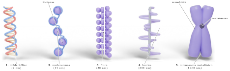
| Nivel | Grosor | Descripción |
| 1. Doble hélice de ADN | 2 nm | Dos hebras de nucleótidos unidas por bases complementarias (A–T, C–G). |
| 2. Nucleosomas (“collar de perlas”) | 11 nm | El ADN da casi dos vueltas alrededor de un octámero de histonas; los nucleosomas se unen por ADN espaciador. |
| 3. Fibra de cromatina | 30 nm | Los nucleosomas se enrollan sobre sí mismos (solenoide). |
| 4. Bucles sobre un andamio proteico | 300 nm | La fibra forma lazos unidos a un eje de proteínas no histónicas. |
| 5. Cromosoma metafásico | 1 400 nm | Máxima compactación, solo durante la división celular. Visible al microscopio óptico. |
| Célula humana | Cromosomas | ¿Homólogos? |
|---|---|---|
| Neurona | 46 | Sí (2n) |
| Espermatozoide | 23 | No (n) |
| Cigoto | 46 | Sí (2n) |
| Glóbulo rojo maduro | 0 | — (sin núcleo) |
| Generación | Pesado | Intermedio | Liviano |
|---|---|---|---|
| 0 (en 15N) | 100% | – | – |
| 1 (en 14N) | – | 100% | – |
| 2 (en 14N) | – | 50% | 50% |
| Concepto | Significado |
|---|---|
| Gen | Segmento de ADN con la información para fabricar una proteína (o un ARN funcional). |
| Locus | Posición fija de un gen en un cromosoma. |
| Alelo | Cada versión de un gen (p. ej., para el grupo sanguíneo: A, B, O). Los homólogos llevan dos alelos de cada gen. |
| Genotipo | Combinación de alelos de un individuo. |
| Fenotipo | Característica observable: resulta del genotipo y del ambiente. |
| Genoma | Todo el ADN de una célula (≈20 000 genes en humanos). |
| Célula | ADN (u.a.) |
|---|---|
| Hepatocito en G1 | 6 |
| Hepatocito en G2 | 12 |
| Espermatozoide | 3 |
| Neurona | 6 |
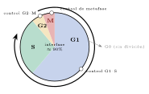
| Etapa | Qué ocurre |
|---|---|
| G1 | La célula crece, fabrica proteínas y organelos; cumple su función. Es la etapa más variable en duración. |
| S | Replicación (duplicación) del ADN: cada cromosoma pasa a tener dos cromátidas. También se duplican los centriolos. |
| G2 | Sigue creciendo y se prepara para dividirse (proteínas del huso, revisión del ADN copiado). |
| M | Mitosis (división del núcleo) y citocinesis (división del citoplasma). |
| G0 | Estado de reposo fuera del ciclo: la célula no se divide (neuronas, fibras musculares). |
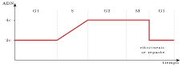
| Control | ¿Qué revisa? | Si hay un problema… |
|---|---|---|
| G1–S | Tamaño adecuado, nutrientes, señales de crecimiento, ADN sin daño | No entra a S: repara el ADN, pasa a G0 o muere (apoptosis) |
| G2–M | ADN replicado completamente y sin errores | No inicia la mitosis hasta reparar |
| Metafase (huso) | Todos los cromosomas unidos al huso y alineados | No comienza la anafase: evita repartos desiguales |
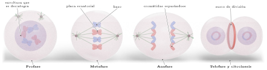
| Fase | Qué ocurre | Truco para recordar |
| Profase | La cromatina se condensa: aparecen los cromosomas (con dos cromátidas). Se desintegran la envoltura nuclear y el nucléolo. Los centrosomas migran a los polos y forman el huso mitótico. | “Preparación”: se ven los cromosomas |
| Metafase | Los cromosomas se alinean en el plano ecuatorial (placa metafásica), unidos por sus cinetocoros a fibras de ambos polos. Máxima condensación: es el momento ideal para hacer un cariotipo. | “Medio” |
| Anafase | Se separan las cromátidas hermanas: el huso las arrastra hacia polos opuestos. Cada cromátida pasa a ser un cromosoma independiente. | “Aparte” |
| Telofase | Llegan a los polos y se descondensan; se forman dos envolturas nucleares y reaparecen los nucléolos. El huso se desarma. | “Terminando”: dos núcleos |
| Citocinesis | División del citoplasma. En células animales: un anillo contráctil de actina y miosina estrangula la célula (surco). En vegetales: vesículas del Golgi forman una placa celular que dará la nueva pared (no pueden estrangularse por la pared rígida). | Dos células |
| Etapa | Punta (meristema) | Zona de 1 cm |
|---|---|---|
| Interfase | 160 | 196 |
| Profase | 22 | 2 |
| Metafase | 8 | 1 |
| Anafase | 4 | 0 |
| Telofase | 6 | 1 |
| Total | 200 | 200 |
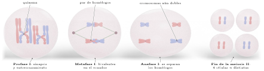
| MEIOSIS I (reduccional): se separan los cromosomas homólogos 2n → n | |
|---|---|
| Profase I | Los cromosomas se condensan y los homólogos se aparean (sinapsis) formando bivalentes o tétradas (4 cromátidas). Entre cromátidas no hermanas ocurre el entrecruzamiento (crossing-over): intercambian segmentos en puntos llamados quiasmas. Es la fase más larga. |
| Metafase I | Los bivalentes (pares de homólogos) se alinean en el plano ecuatorial. La orientación de cada par (materno a un lado o al otro) es al azar: permutación cromosómica (segregación independiente). |
| Anafase I | Se separan los homólogos (cada uno aún con sus dos cromátidas) hacia polos opuestos. No se separan las cromátidas. |
| Telofase I y citocinesis | Se forman dos células haploides (n), cada una con cromosomas dobles. No hay replicación antes de la meiosis II. |
| MEIOSIS II (ecuacional): se separan las cromátidas hermanas n → n (similar a una mitosis) | |
| Profase II – Telofase II | Los cromosomas se alinean (metafase II), se separan las cromátidas hermanas (anafase II) y se forman cuatro células haploides con cromosomas simples, todas genéticamente distintas. |
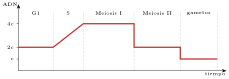
| Momento (humano) | Cromosomas | Cromátidas c/u | ADN |
|---|---|---|---|
| G1 | 46 | 1 | 2c |
| Tras fase S | 46 | 2 | 4c |
| Tras meiosis I | 23 | 2 | 2c |
| Tras meiosis II | 23 | 1 | c |
| Característica | Mitosis | Meiosis |
|---|---|---|
| Células que la realizan | Somáticas | Germinales (en gónadas) |
| Número de divisiones | Una | Dos (meiosis I y II) |
| Células resultantes | 2, diploides (2n) | 4, haploides (n) |
| Información genética | Idéntica a la célula madre | Distinta entre sí y respecto de la madre |
| Apareamiento de homólogos y entrecruzamiento | No ocurren | Sí (profase I) |
| En anafase se separan… | Cromátidas hermanas | Homólogos (anafase I); cromátidas (anafase II) |
| Función | Crecimiento, reparación, reproducción asexual | Formar gametos; mantener constante el número de cromosomas de la especie entre generaciones; variabilidad |
| 1 | Se aísla el gen de interés (p. ej., el de la insulina humana). |
| 2 | Se extrae un plásmido bacteriano: será el vector (vehículo). |
| 3 | Una enzima de restricción corta el gen y el plásmido en secuencias específicas, dejando extremos complementarios (“pegajosos”). |
| 4 | La ADN ligasa une (“pega”) el gen al plásmido: se forma el ADN recombinante. |
| 5 | Las bacterias incorporan el plásmido (transformación). |
| 6 | Se seleccionan las bacterias transformadas (el plásmido lleva un gen de resistencia a un antibiótico: solo ellas crecen en un medio con ese antibiótico). |
| 7 | Las bacterias se multiplican y fabrican la proteína, que se purifica. |
| Área | Ejemplos | Gen o técnica |
| Alimentos | Maíz y algodón Bt, resistentes a insectos; soya tolerante a herbicidas; arroz dorado (con provitamina A); tomates de maduración lenta; quimosina recombinante para fabricar quesos | Gen de la bacteria Bacillus thuringiensis (toxina Bt); genes de narciso y bacterias para el betacaroteno |
| Detergentes | Enzimas (proteasas, lipasas, amilasas) que degradan manchas de proteínas, grasas y almidón, activas en agua fría y con detergente | Genes de microorganismos (a veces de ambientes extremos) expresados y modificados en bacterias u hongos |
| Vestuario | Algodón Bt (menos insecticidas); enzimas para dar el aspecto “gastado” a la mezclilla (celulasas) en vez de piedra pómez; producción de fibras tipo seda de araña en microorganismos | Genes de bacterias y de arañas expresados en microorganismos |
| Fármacos | Insulina humana, hormona del crecimiento, factores de coagulación (hemofilia), vacunas recombinantes (hepatitis B, VPH), anticuerpos para tratar el cáncer | Genes humanos o virales en bacterias, levaduras o células de mamífero |
| Placa | Colonias |
|---|---|
| Sin ampicilina | ≈500 |
| Con ampicilina | ≈12 |
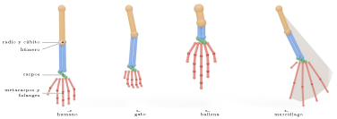
| Especie comparada con el ser humano | Similitud del ADN |
|---|---|
| Chimpancé | ≈98,8% |
| Gorila | ≈98,4% |
| Ratón | ≈85% (genes codificantes) |
| Diferencias en el citocromo c respecto del humano | |
| Chimpancé | 0 aminoácidos |
| Perro | 11 |
| Atún | 21 |
| Levadura | 45 |
| Lamarck | Darwin | |
|---|---|---|
| Origen de la variación | El ambiente provoca el cambio por necesidad | La variación ya existe en la población (al azar) |
| Proceso | El individuo estira el cuello (uso) | Las de cuello más largo comen más, sobreviven y se reproducen más |
| Herencia | Del carácter adquirido en vida | Del carácter heredable ya presente |
| Quién cambia | El individuo | La población (cambian las frecuencias) |
| Afirmación | Corresponde a |
|---|---|
| “Los osos polares se volvieron blancos para camuflarse en la nieve.” | Lamarck (finalidad) |
| “Entre los osos, los de pelaje más claro cazaban mejor en la nieve y dejaron más crías.” | Darwin |
| “Los topos perdieron la vista por no usar los ojos bajo tierra.” | Lamarck (uso y desuso) |
| “Los mosquitos expuestos al insecticida desarrollaron resistencia.” | Lamarck (mal planteado) |
| “Los mosquitos resistentes que ya existían sobrevivieron y se multiplicaron.” | Darwin |
| “El hijo de un fisicoculturista nace musculoso.” | Lamarck (refutado) |
| Año | % oscuras | Aire |
|---|---|---|
| 1848 | ≈2 | Limpio |
| 1895 | ≈95 | Sucio |
| 1990 | ≈20 | Limpio |
| Mecanismo | Efecto |
|---|---|
| Mutación | Cambio en el ADN; fuente original de toda variación nueva (al azar). |
| Recombinación | Meiosis (entrecruzamiento, permutación) y fecundación: nuevas combinaciones de alelos existentes. |
| Flujo génico (migración) | Entrada o salida de alelos con individuos que migran: las poblaciones se vuelven más parecidas. |
| Deriva génica | Cambios al azar de las frecuencias, importantes en poblaciones pequeñas: efecto fundador (pocos colonizan una isla) y cuello de botella (una catástrofe reduce la población: el guepardo). |
| Selección natural | Aumenta los alelos ventajosos; único mecanismo que produce adaptación. |
| Habilidad | Qué se te pide | Ejemplo en este eje |
|---|---|---|
| Observar y plantear preguntas | Identificar preguntas investigables e hipótesis. | “En una isla, los lagartos tienen patas más cortas que en el continente. ¿Qué hipótesis darwinista lo explica?” |
| Planificar y conducir una investigación | Reconocer variables, controles, procedimientos y evidencias que sustentan teorías. | “¿Qué grupo control se requiere para probar que un fármaco detiene la mitosis?” → células iguales sin fármaco. |
| Procesar y analizar la evidencia | Interpretar gráficos y tablas; calcular índices y combinaciones (2n). | “¿En qué etapa la célula tiene 4c de ADN y 46 cromosomas?” → G2. |
| Evaluar | Juzgar validez y alcances; distinguir explicaciones lamarckistas y darwinistas; valorar aportes y riesgos de la tecnología. | “¿Qué limitación tiene el registro fósil?” → es incompleto. |
| Comunicar | Elegir la representación adecuada. | “¿Cómo representar el parentesco entre especies?” → un árbol filogenético. |
| Observación | En un hospital, la bacteria S. aureus es cada vez menos sensible a la penicilina. |
| Problema | ¿La exposición al antibiótico selecciona bacterias resistentes ya presentes? |
| Hipótesis | En una población hay bacterias resistentes por mutación previa; el antibiótico elimina a las sensibles y las resistentes aumentan. |
| Diseño | Se siembra una población en placas: unas sin antibiótico (control) y otras con antibiótico. Se repite el cultivo 5 veces, sembrando cada vez las sobrevivientes. |
| Variables | VI: presencia de antibiótico. VD: % de bacterias resistentes. Controladas: temperatura, medio, tiempo de cultivo. |
| Resultados | Con antibiótico: 0,01 % → 1 % → 40 % → 95 % resistentes. Control: siempre ≈0,01%. |
| Conclusión | El antibiótico seleccionó a las resistentes: se apoya la hipótesis. |
Fin de la teoría · comienza la ejercitación
Eje 3 · Herencia y evolución › Ejercitación
Toca una alternativa para responder. En modo ensayo no verás si acertaste hasta que presiones «Corregir el eje», como en la prueba. Tus respuestas quedan guardadas en este aparato.
| Especie | Diferencias |
| P | 21 |
| Q | 1 |
| R | 11 |
| S | 45 |
Eje 3 · Herencia y evolución › Pauta y especificaciones
| Contenido / habilidad | Preguntas | Mis aciertos |
| Cromatina y cromosomas | 121–126 | –/6 |
| Ciclo celular, control y cáncer | 127–132 | –/6 |
| Mitosis | 133–138 | –/6 |
| Meiosis | 139–144 | –/6 |
| Mitosis vs meiosis y variabilidad | 145–150 | –/6 |
| Manipulación genética | 151–156 | –/6 |
| Evidencias de la evolución | 157–162 | –/6 |
| Teorías evolutivas | 163–168 | –/6 |
| Selección natural y mecanismos | 169–174 | –/6 |
| Habilidades de pensamiento científico | 175–180 | –/6 |
| Habilidad: observar y plantear preguntas | 175, 177 | –/2 |
| Habilidad: planificar y conducir una investigación | 166, 176 | –/2 |
| Habilidad: procesar y analizar la evidencia | 123, 125, 128, 130, 132, 135, 136, 138, 141, 142, 144, 146, 148, 155, 158, 159, 169, 171, 179 | –/19 |
| Habilidad: evaluar | 149, 153, 156, 161, 164, 180 | –/6 |
| Habilidad: comunicar | 178 | –/1 |
| Si fallaste en… | Repasa |
|---|---|
| Cromatina | Bloque A: niveles de compactación, cariotipo |
| Ciclo celular | Bloque B: gráfico de ADN y puntos de control |
| Mitosis | Bloque C: fases e índice mitótico |
| Meiosis y variabilidad | Bloque D: tabla de fases, 2n, comparación |
| Manipulación genética | Bloque E: pasos del ADN recombinante |
| Evidencias | Bloque F: fósiles, homología, ADN |
| Teorías | Bloque G: Lamarck vs Darwin |
| Selección natural | Bloque H: seis pasos, ejemplos, mecanismos |
Eje 4 · Organismo y ambiente › Teoría
Eje 4
En esta área temática se evaluará la capacidad de analizar investigaciones, teorías o leyes científicas asociadas con los procesos de formación de materia orgánica en organismos autótrofos y las implicancias de estos procesos en el flujo de energía y materia en los ecosistemas.
| Concepto | ¿Qué es? | Ejemplo o clave |
|---|---|---|
| Autótrofo | Organismo que fabrica su propia materia orgánica a partir de materia inorgánica y una fuente de energía. | Plantas, algas y cianobacterias (fotosíntesis). |
| Heterótrofo | Organismo que obtiene materia orgánica de otros seres vivos. | Animales, hongos, la mayoría de las bacterias. |
| Fotosíntesis | Transforma energía luminosa en energía química: CO2 + H2O → glucosa + O2. | Ocurre en los cloroplastos. |
| Respiración celular | Oxida la glucosa con O2 para obtener ATP: glucosa + O2 → CO2 + H2O. | Ocurre en las mitocondrias de casi todos los eucariontes. |
| Flujo de energía | La energía entra como luz, pasa por los niveles tróficos y sale como calor: no se recicla. | Solo ≈10% pasa al nivel siguiente. |
| Ciclo de la materia | El carbono y el oxígeno circulan entre los seres vivos y el ambiente. | Fotosíntesis y respiración son complementarias. |
| Autótrofa | Heterótrofa | |
|---|---|---|
| Definición | Fabrica materia orgánica a partir de materia inorgánica (CO2, H2O, sales) | Obtiene materia orgánica ya elaborada de otros organismos |
| Fuente de energía | Luz (fotosintéticos) o reacciones químicas inorgánicas (quimiosintéticos) | La energía química de los alimentos |
| Fuente de carbono | CO2 | Moléculas orgánicas |
| Rol en el ecosistema | Productores | Consumidores y descomponedores |
| Ejemplos | Plantas, algas, cianobacterias; bacterias de fuentes hidrotermales (quimiosíntesis) | Animales, hongos, protozoos, la mayoría de las bacterias |
| Estructura | Estructura–función |
|---|---|
| Cutícula | Capa cerosa: reduce la pérdida de agua. |
| Epidermis | Transparente: deja pasar la luz. |
| Parénquima en empalizada | Células alargadas con muchos cloroplastos, bajo la luz: principal zona fotosintética. |
| Parénquima esponjoso | Células sueltas con espacios aéreos: facilitan la difusión de gases. |
| Nervios (xilema y floema) | Xilema: lleva agua y sales desde la raíz. Floema: distribuye la sacarosa fabricada. |
| Estomas | Poros regulables (células oclusivas): entrada de CO2, salida de O2 y vapor de agua. |
| Organismo | Con luz | En oscuridad |
|---|---|---|
| P | Crece | No crece |
| Q | No crece | No crece |
| R | Crece | Crece |
| S | No crece | No crece |
| Proceso | Transformación |
|---|---|
| Fotosíntesis | Luminosa → química (glucosa) |
| Respiración celular | Química (glucosa) → química (ATP) + calor |
| Contracción muscular | Química (ATP) → mecánica + calor |
| Impulso nervioso | Química (ATP, gradientes) → eléctrica |
| Luciérnaga | Química → luminosa (bioluminiscencia) |
| Combustión de leña | Química → calórica y luminosa |
| Etapa luminosa (fotoquímica) | Ciclo de Calvin (etapa “oscura” o de fijación del carbono) | |
|---|---|---|
| Lugar | Membranas de los tilacoides (donde está la clorofila) | Estroma del cloroplasto |
| Requiere | Luz, agua, clorofila, ADP y NADP+ | CO2, ATP y NADPH (de la etapa luminosa) y la enzima rubisco |
| Qué ocurre | La clorofila absorbe luz y se excitan sus electrones; el agua se rompe (fotólisis) para reponerlos: se libera O2. La energía se guarda en ATP y NADPH | El CO2 se une a una molécula orgánica (fijación); usando ATP y NADPH se reduce hasta formar azúcares de 3 carbonos, con los que se fabrica glucosa |
| Productos | O2 (subproducto), ATP, NADPH | Glucosa (y otras moléculas orgánicas), ADP, NADP+ |
| Transformación de energía | Luminosa → química (ATP, NADPH) | Química (ATP, NADPH) → química (glucosa) |
| Tubo | Distancia lámpara (cm) | Burbujas / 5 min |
|---|---|---|
| 1 | 40 | 5 |
| 2 | 20 | 14 |
| 3 | 10 | 28 |
| Etapa | Lugar | Qué ocurre | ATP |
|---|---|---|---|
| 1. Glucólisis | Citoplasma (citosol) | La glucosa (6 C) se divide en 2 piruvatos (3 C). No requiere O2 | 2 |
| 2. Ciclo de Krebs (con oxidación del piruvato) | Matriz mitocondrial | El piruvato se oxida por completo: se libera CO2 y se cargan transportadores (NADH, FADH2) | 2 |
| 3. Cadena respiratoria (fosforilación oxidativa) | Crestas (membrana interna) | Los electrones viajan por la cadena; el O2 es el aceptor final y forma H2O. La ATP sintasa fabrica la mayor parte del ATP | ≈26–28 |
| Láctica | Alcohólica | |
|---|---|---|
| Producto | Ácido láctico | Etanol + CO2 |
| Ejemplos | Músculo en ejercicio intenso; bacterias del yogur | Levaduras (pan, cerveza, vino) |
| Frasco | CO2 tras 24 h |
|---|---|
| 1. Semillas germinando | Aumenta mucho |
| 2. Semillas hervidas (muertas) | Sin cambio |
| 3. Sin semillas | Sin cambio |
| Fotosíntesis | Respiración celular | |
|---|---|---|
| Organismos | Autótrofos fotosintéticos | Casi todos los seres vivos (incluidas las plantas) |
| Organelo | Cloroplasto | Citoplasma + mitocondria |
| Reactantes | CO2 + H2O + luz | Glucosa + O2 |
| Productos | Glucosa + O2 | CO2 + H2O + ATP (y calor) |
| Energía | Luminosa → química (almacena) | Química de la glucosa → química del ATP + calor (libera) |
| Tipo de proceso | Anabólico (construye moléculas) | Catabólico (degrada moléculas) |
| Cuándo ocurre | Solo con luz | Siempre, de día y de noche |
| Campana de vidrio cerrada con… | Resultado |
|---|---|
| Una vela encendida | Se apaga pronto |
| Un ratón | Muere al poco tiempo |
| Una planta de menta y una vela (días después) | La vela vuelve a arder |
| Una planta y un ratón, con luz | El ratón sobrevive |
| Una planta y un ratón, en la oscuridad (Ingenhousz) | El ratón muere |
| Científico (año) | Experimento | Conclusión |
| Van Helmont (1648) | Plantó un sauce de 2,3 kg en 90 kg de tierra y solo lo regó con agua por 5 años. El sauce pesó 77 kg y la tierra perdió apenas 57 g. | La masa de la planta no provenía del suelo; pensó (erróneamente) que venía solo del agua: no consideró el CO2 del aire. |
| Priestley (1771) | Planta y vela (o ratón) en una campana cerrada. | Las plantas “restauran” el aire que la combustión y la respiración consumen. |
| Ingenhousz (1779) | Repitió los experimentos con y sin luz; observó burbujas en plantas acuáticas iluminadas. | Las plantas producen O2 solo con luz y solo en sus partes verdes. |
| Senebier (1782) | Midió el gas consumido. | Las plantas consumen CO2 (“aire fijo”) en presencia de luz. |
| De Saussure (1804) | Pesó con precisión la planta, el CO2 y el agua. | El aumento de masa se debe al CO2 y al agua. |
| Ruben y Kamen (1941) | Dieron a algas agua con oxígeno pesado (18O) en un caso y CO2 con 18O en otro. | El O2 liberado contenía 18O solo cuando el agua estaba marcada: el O2 proviene del agua. |
| Calvin (1950s) | Siguió el recorrido del carbono radiactivo (14CO2) en algas a distintos tiempos. | Describió el ciclo de fijación del CO2 (ciclo de Calvin). Nobel 1961. |
| Grupo | H2O | CO2 | O2 liberado |
|---|---|---|---|
| 1 | H218O | CO2 normal | con 18O |
| 2 | H2O normal | C18O2 | sin 18O |
| Inicio | 5 años después | |
|---|---|---|
| Masa del sauce | 2,3 kg | 76,7 kg |
| Masa de la tierra seca | 90,7 kg | 90,6 kg |
| Habilidad | Qué se te pide | Ejemplo en este eje |
|---|---|---|
| Observar y plantear preguntas | Preguntas investigables e hipótesis. | “¿Cómo influye el color de la luz en la cantidad de O2 que libera Elodea?” |
| Planificar y conducir una investigación | Variables, controles, procedimiento. | “¿Qué variable debe mantenerse constante al estudiar el efecto de la intensidad de luz?” → la temperatura y el CO2. |
| Procesar y analizar la evidencia | Leer gráficos (saturación, óptimo, compensación), calcular (regla del 10 %). | “¿Qué factor limita la tasa en la zona de meseta?” |
| Evaluar | Validez, confiabilidad, limitaciones; aporte histórico y tecnológico. | “¿Qué error cometió Van Helmont?” → no consideró el CO2 del aire. |
| Comunicar | Elegir la representación. | “¿Cómo mostrar la energía disponible en cada nivel trófico?” → pirámide de energía. |
| Problema | ¿Cómo influye la temperatura en la tasa de fotosíntesis de Elodea? |
| Hipótesis | La tasa aumenta con la temperatura hasta un óptimo y luego disminuye, porque las enzimas del ciclo de Calvin se desnaturalizan. |
| Variables | VI: temperatura del agua (10, 20, 30, 40 °C). VD: burbujas de O2 por minuto. Controladas: intensidad y distancia de la luz, concentración de bicarbonato, tamaño de la rama, tiempo de aclimatación. |
| Procedimiento | Cada tubo en baño termorregulado 10 min antes de contar; 3 ramas por temperatura; 3 conteos. |
| Resultados | 10: 6; 20: 15; 30: 24; 40: 9 (burbujas/min). |
| Conclusión | Óptimo cercano a 30 °C: se apoya la hipótesis. |
| Error | Lo correcto |
|---|---|
| “Las plantas no respiran” | Respiran siempre, de día y de noche |
| “Las plantas respiran de noche y fotosintetizan de día” | De día hacen ambos procesos |
| “El O2 viene del CO2” | Viene del agua (fotólisis) |
| “La masa de la planta viene del suelo” | Viene sobre todo del CO2 del aire (y del agua) |
| “El ciclo de Calvin ocurre de noche” | Ocurre de día; depende del ATP y NADPH de la etapa luminosa |
| “La energía se recicla en el ecosistema” | La energía fluye; la materia se recicla |
| “Más luz siempre aumenta la fotosíntesis” | Solo hasta la saturación; luego limita otro factor |
| “Los animales liberan O2” | Lo consumen; liberan CO2 |
Fin de la teoría · comienza la ejercitación
Eje 4 · Organismo y ambiente › Ejercitación
Toca una alternativa para responder. En modo ensayo no verás si acertaste hasta que presiones «Corregir el eje», como en la prueba. Tus respuestas quedan guardadas en este aparato.
| Especie | Cara superior | Cara inferior |
| Frijol (terrestre) | 40 | 280 |
| Roble (terrestre) | 0 | 340 |
| Nenúfar (hoja flotante) | 460 | 0 |
| Distancia de la lámpara (cm) | Burbujas |
| 10 | 40 |
| 20 | 22 |
| 30 | 11 |
| 40 | 5 |
| Color | Burbujas / 5 min |
| Azul | 30 |
| Verde | 6 |
| Rojo | 27 |
| Condición | ATP por glucosa |
| Con O2 | ≈30 |
| Sin O2 | 2 |
| Condición | CO2 en el recipiente |
| Luz intensa, 2 h | Disminuye |
| Oscuridad, 2 h | Aumenta |
| Tubo | Contenido y condición | Color final |
| 1 | Caracol, con luz | Amarillo |
| 2 | Planta acuática, con luz | Púrpura |
| 3 | Planta acuática, oscuridad | Amarillo |
| 4 | Solo agua, con luz | Rojo |
Eje 4 · Organismo y ambiente › Pauta y especificaciones
| Contenido / habilidad | Preguntas | Mis aciertos |
| Nutrición autótrofa y heterótrofa; la hoja | 181–186 | –/6 |
| Fotosíntesis: ecuación, pigmentos y productos | 187–192 | –/6 |
| Etapas de la fotosíntesis | 193–198 | –/6 |
| Factores: luz y CO2 | 199–204 | –/6 |
| Factores: temperatura, agua, color, minerales | 205–210 | –/6 |
| Respiración celular y fermentación | 211–216 | –/6 |
| Fotosíntesis y respiración | 217–222 | –/6 |
| Flujo de energía | 223–228 | –/6 |
| Ciclos del carbono y del oxígeno | 229–234 | –/6 |
| Habilidades de pensamiento científico | 235–240 | –/6 |
| Habilidad: observar y plantear preguntas | 235, 238 | –/2 |
| Habilidad: planificar y conducir una investigación | 236, 237 | –/2 |
| Habilidad: procesar y analizar la evidencia | 185, 189, 191, 195, 197–199, 201–203, 205–207, 209, 214, 215, 218, 220, 224, 227, 231, 234 | –/22 |
| Habilidad: evaluar | 221, 233, 239 | –/3 |
| Habilidad: comunicar | 228, 240 | –/2 |
| Si fallaste en… | Repasa |
|---|---|
| Nutrición y hoja | Bloque A: autótrofos, tabla de la hoja |
| Fotosíntesis | Bloque B: ecuación, etapas, pigmentos |
| Factores | Bloque C: gráficos de luz, CO2, temperatura |
| Respiración | Bloque D: etapas, fermentación |
| Comparación | Tabla fotosíntesis vs respiración |
| Ecosistemas | Bloque E: pirámide, ciclos |
| Experimentos | Bloque F: historia de la fotosíntesis |